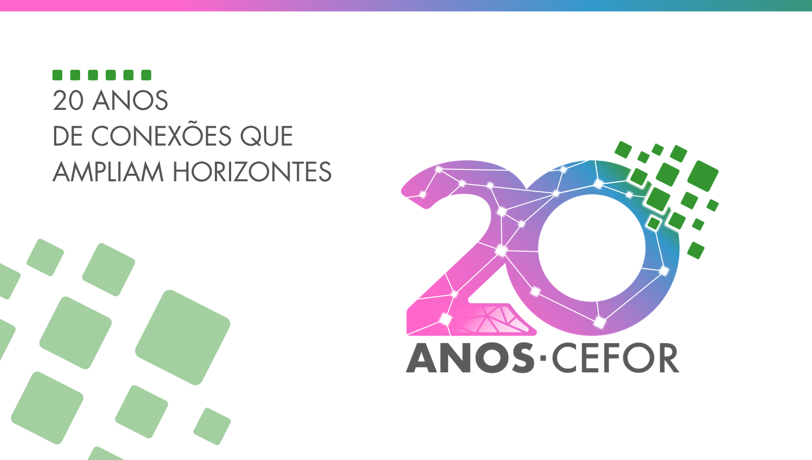

O selo dos 20 anos do Cefor: vibrante e colorido — diversidade, conexão, unicidade, tecnologia e crescimento. Entra como acento festivo sobre a base Concefor.

Versão colorida é restrita a fundo branco. Em fundos coloridos, usar a versão monocromática (preto ou branco).